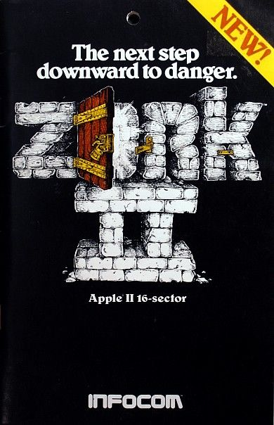

Zork II is a text adventure game and sequel to Zork I, but don’t worry “you need not have played Zork I to play Zork II” (Softline May 1982). In Zork II, players must face off against the Wizard of Frobozz, a “formidable foe” who appears randomly to thwart your efforts at solving the puzzle’s riddles. Zork II is similar to other text adventure games where players type commands such as "lift cage" or "examine robot".

Impact
Zork II ranked number 3 in Softalk’s May 1982 issue’s top 5 adventure games. The Softline May 1982 issue called Zork II a well-thought-out and imaginative adventure as well as titillating and terrifying. The Zork series was among the top ten rated games in Computer Gaming World’s 1983 game ratings for games from 1982 - 1983. Zork I was one of the first interactive fiction computer games and known for being the legacy of Infocom (its publisher).
Production History
Zork II was created in 1982. It was created by Dave Lebling and Marc Blank. Zork II was published by Infocom. Infocom was bought by Activision in 1986 and shut down by in 1989.